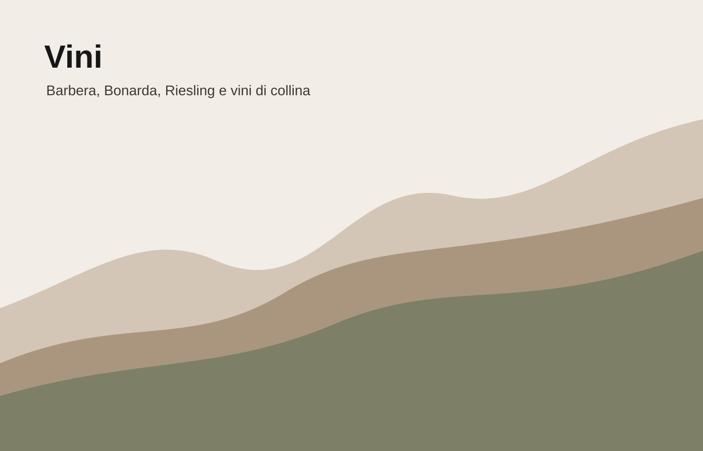

Barbera
Rosso vivo e conviviale. È il vino che apre il percorso e accompagna le prime soste.
rossoconvivialeVini
La selezione non è costruita come una carta tecnica, ma come una piccola geografia: vini di ingresso, vini di salita, vini da tavola.

Rosso vivo e conviviale. È il vino che apre il percorso e accompagna le prime soste.
rossoconvivialeFrutto, tradizione e immediatezza. Porta il racconto verso la tavola e i prodotti locali.
territoriotradizioneFresco, verticale, legato alla parte più alta della strada e al crinale panoramico.
quotafreschezzaIl sistema visivo può usare il marchio in piccolo, lasciando spazio al nome del vitigno. Il legame con Stracrösa rimane nel dettaglio della Ö e nel racconto della quota.